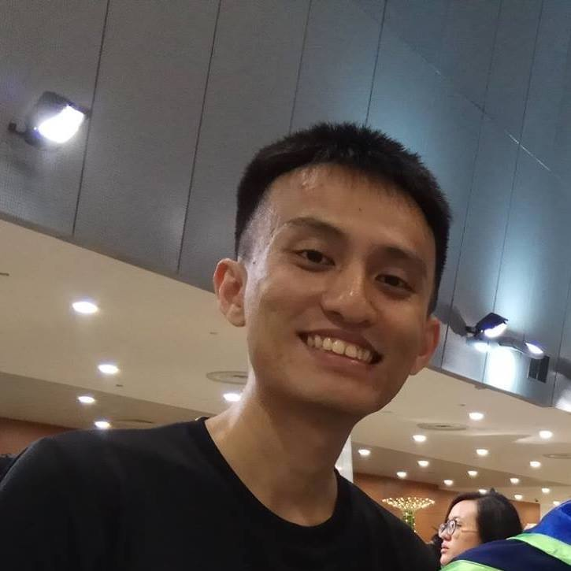

Bio
Hi, my name's Daniel and I'm an aspiring software developer. I studied Physics at university and worked as a research assistant in an atomic physics laboratory for 2 years upon graduation. I am currently embarking on a career transition from physics to software development by studying for my Graduate Diploma in Systems Analysis at the National University of Singapore.
I'm on the lookout for job opportunities in fullstack web development. I also have a general interest in science and technology. I'm on LinkedIn if you'd like to connect! :)
Work Experience
- Project Officer, Nanyang Technological University, 2019-2021
- Assisted with the design, construction and implementation of a hot vapor cell experiment.
- Assisted with the procurement of equipment, materials and consumables for the laboratory.
Worked in the Ultracold Atoms and Quantum Sensing Laboratory in the School of Physical and Mathematical Sciences under Assistant Professor Lan Shau-Yu.
Education
- Graduate Diploma in Systems Analysis, National University of Singapore, 2021-2022 (est.)
- Bachelor's of Science in Physics, Honours (Highest Distinction), Nanyang Technological University, 2015-2019